概述：.NET 可执行文件结构分析（翻译）
[toc]
.NET 框架
.NET 软件开发框架和生态系统是由微软在2002年首次发布。旨在提供一个可控的编程环境并且可以在基于Windows操作系统上进行开发、安装和执行。随着 .NET 的发展，.NET5 之后开始支持跨平台开发，并且支持多语言（C#、VB.NET和F#）。
.NET 框架包含了一个名为 Framenwork Class Library（FCL） 的大型类库，为开发人员提供了从数据访问到加密以及 XML 解析等一系列线程可用、经过测试和优化的功能。由于广泛的支持和托管运行环境使得 .Net 需要更多人工干预的语言和框架。将以上特性结合起来，可以创建一个在桌面、前端、移动设备创建一些列应用程序的高效环境。
.NET威胁环境
相比于 C/C++，由于 .NET 用户友好的开发过程、丰富的功能集、以及平滑的 Windows 集成，恶意软件开发人员可能更喜欢 .NET 框架。但是，像 DNSpy 这样的工具使得逆向恶意软件变的很简单，促使了创造这些恶意软件的人使用模糊方法，使得分析更加困难。另外，.NET 的能力是的恶意软件改变其行为或者隐藏使其更难以检测和逆向。虽然 C/C++ 允许对系统资源进行更精细的控制，以至于其可能会导致更谨慎和更高效的恶意软件，但是这需要对系统内部工作原理有更深入地了解。这就使得 .NET 更加有吸引力了，因为追求开发速度和易用性的 .NET 是一个更有吸引力选择。
.NET 威胁环境持续演变，攻击者经常利用适应性强且被广泛采用的 .NET 框架来精心编制和部署各种复杂的威胁。这个框架支撑了许多网络攻击，比如臭名昭著的 Locky 和 Killnet。凭据窃取程序和英航特洛伊木马程序（如CryptoClippy）同样也是基于 .NET 的威胁。此外，用 .NET 编写的破坏性 Wipers 正在不断增加。DoubleZero 以及最近发现的 Hatef Wiper 就是这种趋势的例证。
此外，.Net 在创建远程访问特洛伊木马（RATs）方面也发挥了重要的作用。例如 QuasarRAT 和 NanoCore，它们因其丰富的功能集以及易于修改和混淆而在地下圈子广受赞誉。此外，.NET 是创建恶意软件加载器的常用工具，这些加载器可以谨慎地安装和执行其他类型的恶意软件。
.NET 编译和运行
编译 - 托管代码
托管语言（C#、F#或VB.NET） 的执行由运行库控制。当合适的语言编译器编译源代码时，输出中间语言（Intermediate Language，IL），也被成为 MSIL(Microsoft Intermediate Language)，托管代码（Managed Code）或者公共中间语言（Common Intermediate Language，CIL）。
举例说明，当在 .NET 框架下编译 C# 代码时，C# 编译器（csc.exe）的输出是一个 .NET 程序集，该程序集可以是独立程序的可执行文件，也可以是可重用库的动态链接库（DLL）。
这与编译非托管语言（比如 C/C++）不同，在非托管语言中，源代码直接转换为机器码。然后托管代码打包到一个程序集中，并附带一个包含所需元数据的清单。
托管代码的优美之处在于可移植性和灵活性；同样的程序集可以在 .NET 支持的任何平台上运行，而无需重新编译。此外，托管代码允许跨语言继承代码访问安全性。它提供了后期绑定支持的优势，从而可以在运行时进行解析并调用函数。托管代码和程序集结构提供的这种级别的抽象是 .NET 框架的多功能行和强大功能的基石，使其开发人员能更安全、更易管理、更适时地去开发应用程序。
下图演示了 .NET 中的编译和执行过程，以 C# 作为演示，但适应于所有的 .NET 语言。
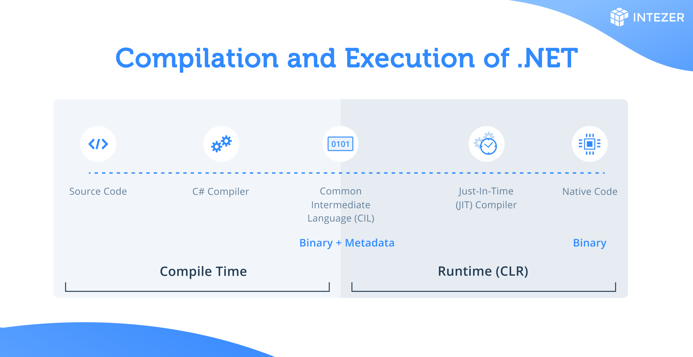
运行时库 - 通用语言运行库(The Common Language Runtime,CLR)
通用运行时库是管理 .NET 程序执行的微软 .NET 框架中的一个重要组件。它本质上是提供运行 .NET 应用程序所需的各种服务的执行引擎，而不管这些应用程序是用什么变成语言编写的。
当一个 .NET 二进制文件被执行时， CLR 开始设置执行环境，但不会立马去把所有的托管语言翻译为原始的机器码。实时编译（Just-In-Time）会在被调用的时候将托管代码转换为机器码。这确保了在特定硬件上的高效执行。此外，.NET Core 和 .NET 5+ 中的 NGEN 和 AOT 编译技术可以在执行托管代码前将其预编译为本机代码，从而进一步提高了性能。
CLR 的功能超出了应用程序的执行范围；它提供了诸如内存管理、异常处理、垃圾回收、类型安全检查和安全性等关键服务。由 CLR 协调的内存管理抽象了开发人员手动分配和释放内存的需要，显著减少了内存泄漏和相关错误。提供自动的垃圾回收来管理对象生命周期，通过释放应用程序不再使用的对象来回收内存。
此外，CLR 强制执行严格的类型安全并确保应用程序不会尝试执行不安全或未经验证的操作。它在 .NET 的安全体系结构中也发挥着重要作用，提供代码访问安全性（Code Access Security,CAS），其根据分配给应用程序的信任级别控制程序可以访问那些资源。总体来说，CLR 创建了一个高级别的环境，可以有效减少传统变成语言所需的香醋多低级编程任务，实现了更快的开发周期、更高的生产力和更安全可靠的应用程序。这使得 CLR 成为 .NET 生态系统不可或缺的组件。
非托管函数
.NET 框架中的非托管函数是指在 CLR 的托管环境之外运行的代码。这些函数通常用 C 或 C++ 等语言编写，并直接编译成机器特定的代码，绕过 CLR 的管理。这也意味着上述的一些特征如内存管理、垃圾回收等功能是托管环境固有的功能不适用于这些非托管函数。它们主要用于互相操作的目的，允许 .NET 应用程序利用不是与 .NET 程序兼容语言编写的遗留代码或者外部库。当需要使用现有的非 .NET 库或者调用系统级别的 API 时，只能通过非托管代码访问。
然而，这带来了额外的复杂性和责任，因为开发人员必须手动处理内存泄漏和错误处理，增加了内存泄漏和安全漏洞等问题的可能性。在恶意软件分析的上下文中，了解非托管函数至关重要，因为它们可用于执行绕过托管环境的某校保护措施的代码，从而在分析和检测中带来不一般的挑战。
非托管函数示例
要创建使用非托管代码创建一个简单的 .NET 应用程序，可以使用 C# 中的平台调用服务（Platform Invocation Services, PInvoke）。PInvoke 允许托管代码从动态链接库（DLL）中调用非托管函数。
如下所示为：从 user32.dll 中调用 MessageBox 函数，user32.dll 是一个标准的Windows库。
using System;
using System.Runtime.InteropServices;
class Program
{
// Importing the MessageBox function from user32.dll
[DllImport("user32.dll", CharSet = CharSet.Unicode)]
public static extern int MessageBox(IntPtr hWnd, String text, String caption, uint type);
static void Main(string[] args)
{
// Calling the MessageBox function - this is an unmanaged function call
MessageBox(new IntPtr(0), "Hello, World!", "Message Box", 0);
}
}简单说明一下上述代码：
- 首先从
user32.dll中使用DllImport属性导入MessageBox函数。 这一步非常关键，主要是告诉 CLR 这个函数是一个外部函数，而非 .NET 运行时库函数。 MessageBox的声明与 user32.dll 中的非托管函数一致。- 在
Main函数中， 调用MessageBox函数， 参数包括一个窗口句柄（示例传递的IntPtr(0)）、一个文本（Hello, World!）、一个窗口标题（Message Box）、以及一个消息框类型参数 （0，0 指最简单的只有一个确认按钮的窗口）。 - 当程序被运行，将在屏幕上显示一个窗口。
.NET 程序集
.NET 程序集是 .NET 应用程序的基本构成，用作一个或多个代码模块或资源文件的集合。生成的程序集的内容包括以下三个部分：
- Intermediate Language, IL：IL 是一个与 CPU 无关的指令集，它使相同的程序集能够在 .NET 框架支持的不同平台上执行。
- Metadata：它描述了由 CLR 管理的结构元素，如程序集、类型（类、接口、枚举、结构体），方法等等。这包括调试、垃圾回收、安全属性所需的信息以及运行库管理代码所需的详细信息。
- Manifest: 是描述程序集本身的元数据的特定部分。它包括程序集的名称、版本、区域性，还可能包括唯一标识程序集的强名称。元数据描述程序集内的内从，而清单文件提供程序集整体的高级别概述，以确保程序集与其所依赖的其他正确版本的程序集交互。
.NET 可执行文件格式分析
在这一部分，将对 .NET 内层进程分析。作者使用一个示例（The Notorious SubBurst）来演示所涉及到的概念，以便于能理解。
示例：Malicious SUNBURST b91ce2fa41029f6955bff20079468448 - Intezer
文件hash: 32519b85c0b422e4656de6e6c41878e95fd95026267daab4215ee59c107d6c77
使用到的工具有 dnSpy、 ILSpy、 和 PEStudio 。(这里建议大家实际操作去打开一个 C# 编译的 dll 查看一下)
（由于资源下载的缘故，我没法拿到样本进行展示，看看原作者的分析内容吧）
在 .NET 程序集上下文的运行时标头指定了由 CLR 使用的 PE 文件格式中的基本元素，包含了 CLR 正确执行该 .NET 程序集所需的元数据和关键详细信息。该运行时标头是 PE 文件标头中的第 15 个数据目录条目，也被成为 CLR 运行时标头（CLR 头）。
数据目录是 PE 文件中的索引或目录，列出了重要部分，并提供了各个部分的位置和大小，这个结构提供对 PE 文件不同部分的高效访问，例如导入和导出表、资源、CLR 运行时头等。
如下所示条目描述了运行时标头的相对虚拟地址及其大小，从而将 CLR 引导到此标头来管理 .NET 程序集在加载时如何执行。
截图的第15个条目表是 .NET 的相关信息。
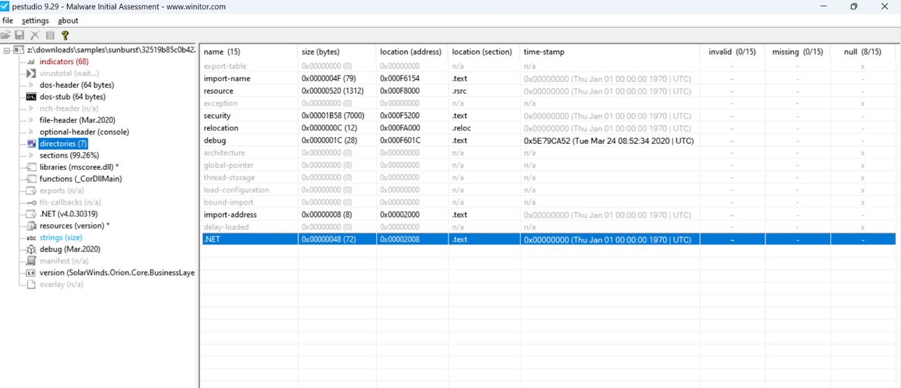
接下来的部分，作者主要介绍了 PE 结构、元数据头及之前的关系。
元数据头管理了文件内容。它提供了一个分类目录来列出每一块数据的大小、以及偏移量。当 CLR 或者如 dnSpy 或者 ILDasm 这些工具需要访问一段元数据的时候，它会查询元数据头以找到合适的文件流。然后，它导航到该流中的正确位置以读取数据。
接下来，就是分析说明 .NET 元数据头中的各个关键字。
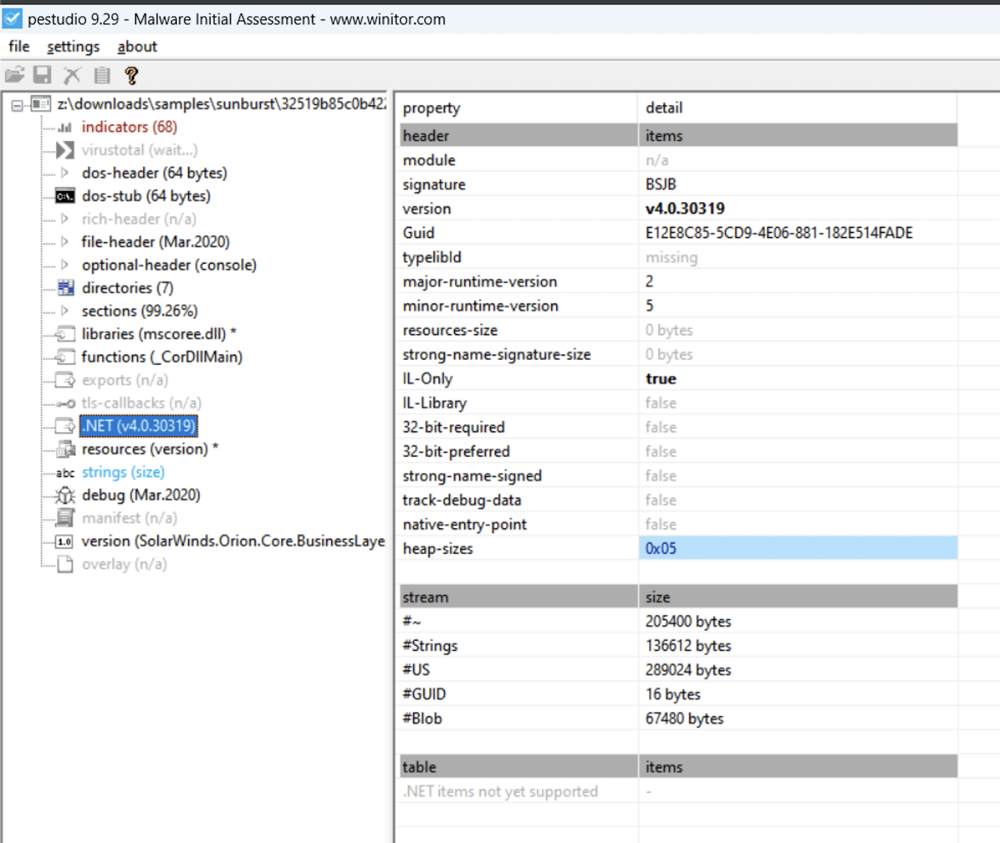
-
Signature: 签名、所有的 .NET 元数据头签名都是 BSJB (0x42534a42)
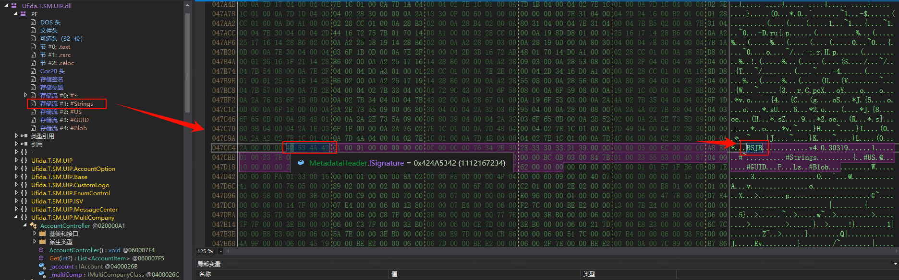
-
GUID：长度为 128bits 的唯一标识
-
IL-Only：这个标志指明程序集只包含中间语言（IL）代码，而不包含特定于CPU的本机代码。PE 可以同时包含托管代码和非托管代码。
-
32-bit-required: 设置这个标志时，表示程序需要32位运行库，即使运行在64为操作系统上。它通常用于依赖于32为本机依赖项或32位运行时的特定行为的程序集。
-
Strong Name Signed: 强签名。指示程序集是否已使用强签名。强命名涉及使用公钥/私钥对程序集进行签名，提供唯一标识并确保程序集未被篡改。
-
存储流（Streams）是指包含特定类型的元数据的结构化数据段，.NET 程序集元数据的关键流包括：
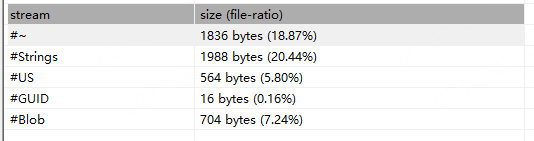
- #~（Tilde）Stream：主元数据块包含元数据表。这些表存储有关程序集中定义的类型、方法、字段、参数和其他元素的信息。波浪线数据块是根据 CLI 规范定义的元数据表模式构造的。
Strings Stream: 这个数据块存储元数据使用的字符串，比如类型名称、方法名称和字段名称^这块内容在后文会用到^。元数据表（#~数据块中）的引用指向了当前数据流中实际字符串的偏移量。US (User Strings) Stream: 这个数据块保存程序集中使用的文本字符串值，如代码中的字符串变量或字符串常量的默认值。元数据引用这些字符串，特别是在加载字符串文字的指令中。GUID Stream: 包含程序集使用的GUID。固定大小为 0x10，此数据块中的每个条目都是一个GUID，用于标识元数据的某些方面，如模块版本的ID(MVID)。Blob Stream: “Binary Large Object” 数据块。存储用于各种情况的二进制数据，比如字段的默认值、方法签名、属性签名和封送处理信息。元数据表中的项引用此数据块以获取详细的二进制信息。Pdb Stream: 可选数据块，包括元数据和 IL 代码与源文件以及和文件相关联的调试信息。
在不同的 .NET 程序集查看到的内容可能不太一样，ILSpy 会展示 元数据 的各个组成部分，dnSpy 则会解析为一个 PE 文件。
Metadata
Metadata 在 .NET 中就是一组描述程序结构及其特点的二进制数据。包含了代码中定义的类型（类、接口、枚举等），成员定义（方法、属性、字段、事件）引用类型和成员以及程序集本身的信息。
在存储次描述性信息的 PE 文件中，元数据被划分为几个表，统称为元数据表。每个表都遵循一个特定的模式，该模式概述其包括的数据结构和性质。以下是可以在元数据表中能找到的一些关键类型的信息：
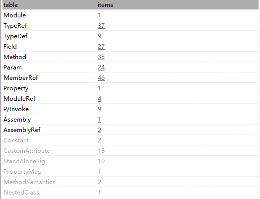
**定义表（Definition Table）：**包含有关在当前程序集中定义的代码的信息。包括以下几个表：
- 类型定义表（TypeDef Table）： 源代码中定义的每个类或接口的详细信息，包括其名称、可见性、基类型以及它包含的方法或属性。主要关键字包括：
- 类型名：类型的名称
- 命名空间：该类型所属的命名空间
- 基础类型：Typedef、TypeRef 或 TypeSpec 表的索引，指示类型的基类。
- 标志位：描述类型属性（可视化，抽象/封装状态，等）
- 方法定义表（MethodDef Table）：每个方法的详细信息，包括其名称、签名（参数和返回类型）以及与其相关的 IL 代码。主要关键字为以下几个：
- 关键字定义表（FieldDef Table）: 描述每一个关键字（类成员变量），包括名称和类型，关键字如下所示：
- 名称：关键字名称
- 签名，指向关键字的类型签名的 blob 索引
- 标志位：指定字段属性，如可见性、静态/实例，和仅初始化（只读）。
引用表(Reference Tables)：包含程序集外部但又程序集引用的代码信息，包含以下内容：
- 类型引用表（TypeRef Table）: 当前程序集引用的其他程序集中定义的类型的信息
- 成员引用表（MemberRef Table）：描述定义在其他模块或程序集的成员（方法、属性等）
清单元数据表（Manifest Metadata Table）：描述程序集本身，包含以下内容：
- 程序集表（Assembly Table）：关于程序集本身的一些信息，如名字，版本，已经强强签名校验。
- 应用程序集表（AssemblyRef Table）：描述当前程序集依赖的其他程序集，包括他们的名称、版本、公钥（如何是强名称的）
模块表（Module Table）：关于当前模块的一些信息，如模块名、用于标识唯一性的GUID
自定义属性表（CustomAttribute Table）：包含程序集中用于不同元素的自定义属性的详细信息。
事件表和属性表（Event Table and Property Table）：描述在类型中声明的事件和属性。
参数表（Param Table）：关于各函数参数的信息。
独立签名表（StandAlonesig Table）：独立签名可用于封装类型或方法签名。
常量表（Constant Table）：存储代码中定义的常量。
这些表对于 CLR 的操作至关重要，因为它们提供了执行程序集所需的上下文信息。在运行时读取他们以执行各种任务，如类型实例化、方法调用、安全验证等。
这些元数据表以高度优化的二进制格式编码，运行时可以有效地处理这些格式。通过反射，还可以以编程方式访问元数据，并且允许 .NET 应用程序在运行时检查自己跌结构或其他程序集的结构。这种内省能力支持 .NET 框架支持一系列动态编程。
元数据唯一标识（Metadata Unique Identidier,ID）
元数据标记是 CLR 用于引用程序集的元数据表中的元数据元素的唯一标识符。这些表的每个条目都被分配了一个元数据标记，作为对该特定条目的稳定引用。
元数据标记对于 CLR 与已编译代码进行交互至关重要，因为它们为运行时库提供了有效的标识和访问元数据的方法。PE文件中的每个类型、成员、签名或其他元数据描述符都具有相应的标记。
在 dnSpy 中，每个方法在其声明之上都包含一个注释，信息包括令牌、RID、RVA 和文件偏移量。如下所示屏幕截图：
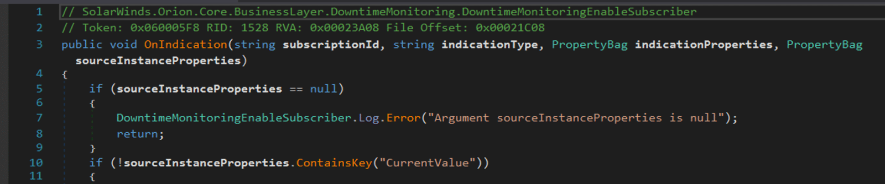
看一些各个字段的含义：
- 标记（Token）: 元数据标记的高字节（big-endian）指定元数据的类型，以便于运行时识别。它指示令牌引用的元数据中的那个表（TypeDef、TypeRef、MethodDef等）。有关令牌类型的值得我更多信息可以参见附录A。
- 行索引（Row Index,RID）：元数据标记的其余24位用于索引相关的元数据表。它们指示可以在哪里找到此元素的实际元数据的行号。由于每个表可以有数百万个条目，因此24位允许有足够范围的索引。
- 相对虚拟地址（RVA）: 相对虚拟地址是函数实体（编译的 IL 代码）相对于程序被加载到内存的基地址的地址。例如，0x00023B28 意味着该函数的 IL 代码从加载模块的基地址的内存偏移大小。CLR 使用 RVA 在运行时定位并执行函数代码。在 PE 文件的上下文中，该文件的格式用于windows平台的 .NET 程序集，当文件加载到内存后，RVA 被广泛用于引用文件的各个部分。
- 文件偏移（File Offset）: 这个值表示当前函数的 IL 代码在 .NET 程序集（.dll 或 .exe 文件）中的实际位置。0x00021D28 表示从文件开始到函数代码开始的位置的偏移量（以字节为单位）。这对于直接对程序集文件进行二进制分析或操作非常有用，因为它能准确的告诉你在文件中哪里可以找到该方法的代码。
元数据标记的结构在运行时解析引用提高了 CLR 的性能。例如，当 JIT 编译器需要将 IL 编译成本机代码时，它使用元数据标记来查找方法签名、类型信息等。元数据令牌系统还支持 CLR 的动态特性，比如反射。它允许有效地执行各种运行时服务，如类型安全、安全检查和跨语言互操作性。
元数据表示例
如下所示为 SolarWinds 恶意软件的启动函数。
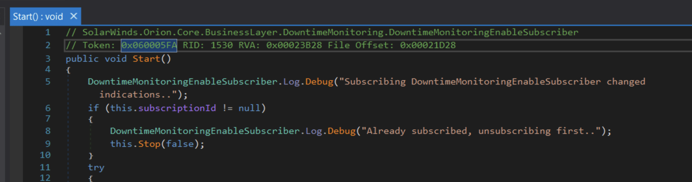
标记的高位（0x6）值为6，对应元数据表6，即方法定义表（MethodDef Table）。
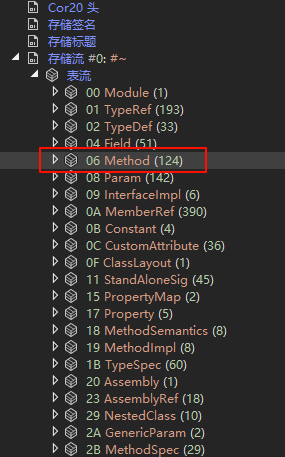
标记的下半部分是 0x5FA，是其在 MethodDef Table 中的条目号。如下所示：
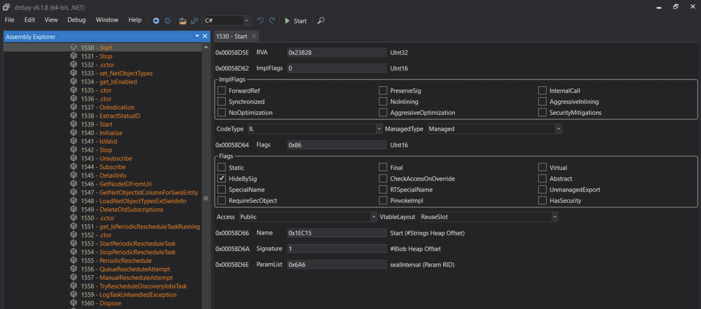
检查 Start 函数的元数据的下半部分，值 0x00058D66 是从可执行文件开始的偏移量，偏移量（0x1EC15）的值在 字符串流（#String stream） 中，它将包含方法名称：Start。如下所示是在 dnSpy 的 Hex 编辑器中的数据：
这里找
Start函数在#Strings流中位置时，需要按照 Method 的索引来查找。hex(1530) = 0x5FA，前文提到了 Strings 流的组成，所以在查找Start方法时，需要中 Strings 流中的方法名开始（Method），索引为0x5FA。
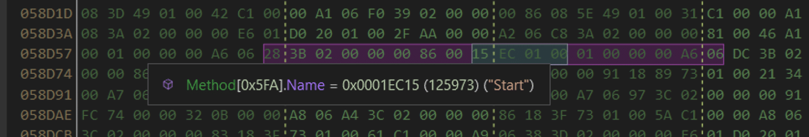
字符串流中偏移量的值如上所示。dnSpy 会自动检测字符串的值。
要查看 String 流中的数据，需要执行以下操作：
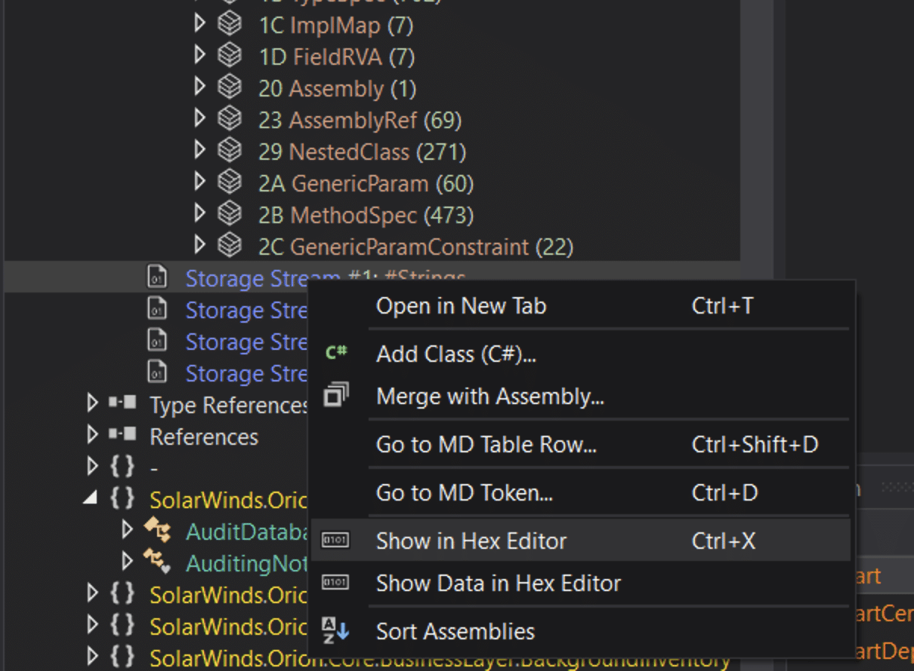
在新窗口中，转到偏移量（相对于 字符串流基地址）并查看我们正在寻找的字符串 - Start。
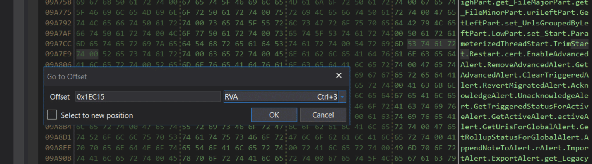
Manifest（清单）
.NET 清单是 .NET 程序集的关键部分，描述程序集中的元素如何彼此关联。它嵌入在每个程序集中，无论它是静态的还是动态的，并且包含程序集操作所需的基本数据，包括其版本要求、安全标识、范围定义以及对资源和类的引用的解析。
.NET 清单的主要功能是提供全面的元数据描述，以便于组件的识别、版本控制和依赖管理。它确保程序集是自描述的，有助于解析类型引用并将这些引用映射到包含其声明和实现的文件。这对于维护版本控制以及确保不同程序集合依赖它们的组件之间的兼容性尤为关键。
.NET 清单文件内容
清单包括对程序集的标识和操作至关重要的各种信息：
- 程序集名称：指定程序集名称的文本字符串
- 版本号：包括主版本号和次版本号，以及修订版本号和构建版本号，供通用语言运行库用于执行版本策略。
- 语言及区域信息：指定程序集支持的语言和区域，对于包含区域性语言特定信息的附属程序集尤为重要。
- 程序集中的文件列表：包括程序集中包含的每个文件及其名称的散列，以确保完整性和程序集的完整性。
- 类型应用信息：运行时用于将类型引用映射到其声明和实现的文件，这对类型安全性和正确性至关重要。
- 引用程序集信息：列出当前程序集静态引用的其他程序集，包括它们的名称、元数据（如版本号、语言、操作系统）以及如果有强命名时的公钥
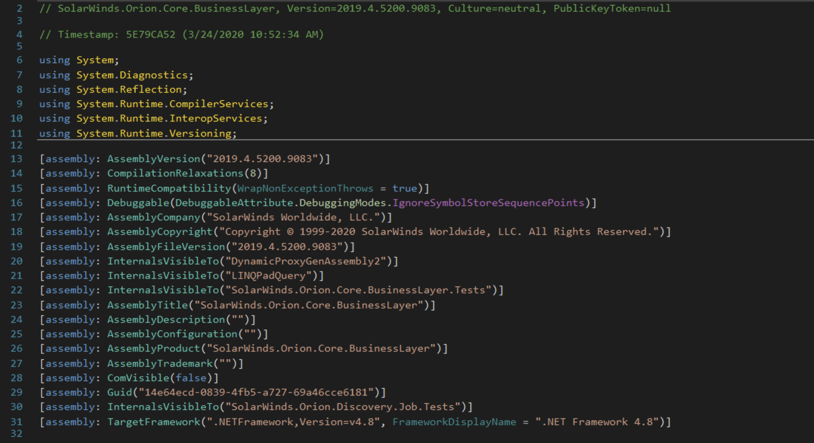
函数体结构
.NET 函数体结构可以编码为 “Tiny” 格式和 “Fat”格式，根据函数的复杂性和需求，每种格式用于不同的目的。在 Tiny 头和 Fat 头之间的选择是有 .NET 编译器基于所编译函数的复杂性决定的。
Tiny 头（The Tiny header）是两种格式中较简单的一种。当一个方法满足特定的条件时，就会使用这个header：
- 函数体小于 64 bytes
- 堆栈深度不会超过8槽（堆栈上的每个条目都有一个槽，与条目的大小无关）
- 不包含本地变量或结构化异常处理程序（SEH）
Tiny 头更加紧凑，并且针对小型函数进行了优化。
Tiny 头是一个单字节长度，下面的 2 bits 设置为 0x2（二进制 10），表示它是一个 Tiny 头，剩下的 6 bits 表示函数提的大小。这种紧凑的格式允许有效地存储小型函数体，减少了简单方法的元数据开销。
| Field | Size(Bits) | Description |
|---|---|---|
| Header Flag | 2 | 在 Tiny 头中总是被设置为 10(二进制) |
| Method Size | 6 | 指定函数体的大小（以字节为单位，最大为 63 bytes） |
Fat 头（The Fat header）用户更复杂的函数主题，超过了 Tiny 头的限制：
- Fat 头用于不符合 Tiny 头标准的较大函数
- 它提供了其他信息，比如方法的局部变量和 SEH
- 当一个函数的大小或者复杂度超过了 Tiny 头的显示，就会使用 Fat 头。
Fat 头更大，由多个字段组成，包括一个标志字段，用于指示方法函数体的其他特征（例如异常处理或局部变量初始化）。
| Field | Size(Bits) | 描述 |
|---|---|---|
| Flags | 2 | 指定函数图的属性，包括是否存在局部变量、初始局部变量等。最低位（0x3）在设置为 1 时表示 Fat 头。 |
| Size | 2 | 4 byte 大小的头。包括整个头部的大小，不仅仅是函数体的大小 |
| MaxStack | 2 | 方法执行期间操作数堆栈上任何点上的最大项数 |
| CodeSize | 4 | 函数体 IL 代码的大小（byte） |
| LocalVarsigTok | 4 | 用于局部变量签名的元数据标记，仅当方法具有局部变量时才显示 |
| MoreSections | N | 例如异常处理子句的附件部分，如果在标志中指定，则显示。 |
想看更多字段说明，可以看 The .NET File Format
函数体示例
如下所示为 DeleteDiscoveryprofileInternal 函数：
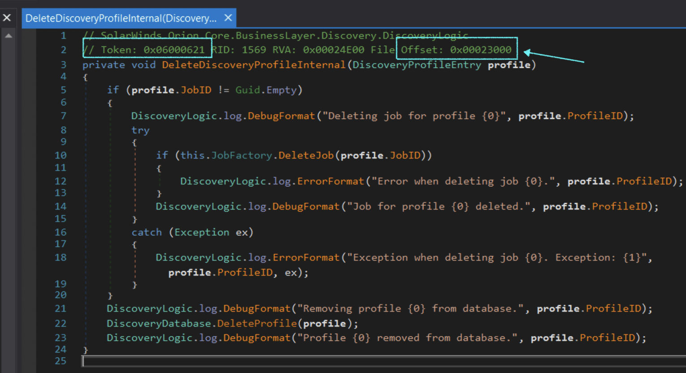
点击偏移量（或 RVA）将会条传到 HEX 窗口中函数的头部：
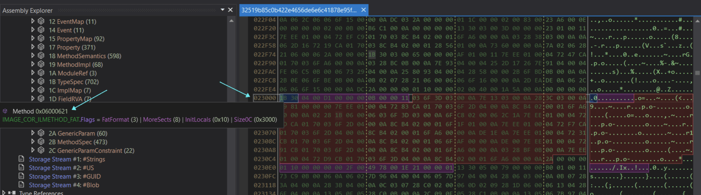
在这里，我们可以看到 dnSpy 在鼠标悬停在头部字节上时突出显示了头部字段。函数的内容-指令跟在头部后面，在 dnSpy 中表示为 image_core_ilmethod_fat.instruction[]。为了更好的理解和查看指令的值（操作码），我们将在 IDA 中打开恶意软件：
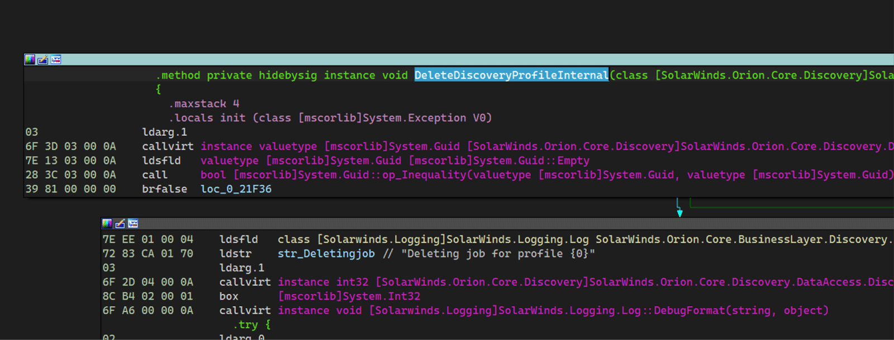
我们可以看到左边是每个操作妈的值，遵循 dnSpy 中的前两条指令：
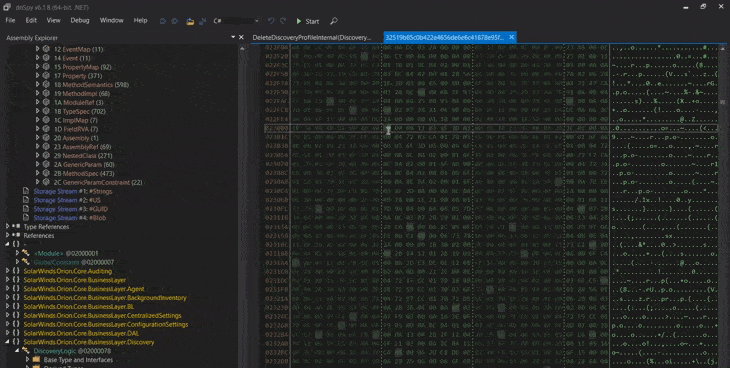
总结
在对 .NET 可执行文件结构的初步探索中，我们已经深入研究了 .NET 框架的复杂性，强调了其合法开发和恶意软件创建的双重用途。通过剖析 .NET 编译、运行以及元数据和程序集的复杂细节，我们已经为理解 .NET 程序函数如何执行以及如何为恶意目的操作它们奠定了基础。随着你深入研究 .NET 恶意软件逆向工程技术，你会发现这对你有效分析和对抗基于 .NET 威胁的恶意软件非常有效。
附录
标记类型表
| Token Type | Value(Hex) | Description |
|---|---|---|
| Module | 0x00 | References a module definition. 引用模块定义 |
| TypeRef | 0x01 | References a type in another module. 引用另一个模块类型 |
| TypeDef | 0x02 | Defines a type within the module. |
| FieldDef | 0x04 | Defines a field within a type. |
| MethodDef | 0x06 | Defines a method within a type. |
| ParamDef | 0x08 | Defines a parameter for a method. |
| InterfaceImpl | 0x09 | Defines interface implementations for a type. |
| MemberRef | 0x0A | References a field or method in another module. |
| CustomAttribute | 0x0C | Defines a custom attribute. |
| Permission | 0x0E | Defines declarative security permissions. |
| Signature | 0x11 | Defines a standalone signature. |
| Event | 0x14 | Defines an event within a type. |
| Property | 0x17 | Defines a property within a type. |
| ModuleRef | 0x1A | References an external module. |
| TypeSpec | 0x1B | Specifies a type using a signature. |
| Assembly | 0x20 | Defines assembly metadata. |
| AssemblyRef | 0x23 | References another assembly. |
| File | 0x26 | Defines an external file associated with the assembly. |
| ExportedType | 0x27 | Defines a type exported from another assembly. |
| ManifestResource | 0x28 | Defines an embedded resource. |
| GenericParam | 0x2A | Defines a generic parameter for a type or method. |
| MethodSpec | 0x2B | Specifies a method instantiation for a generic method. |
| GenericParamConstraint | 0x2C | Specifies constraints on a generic parameter. |